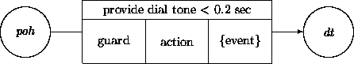
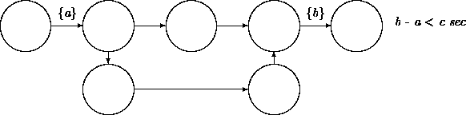
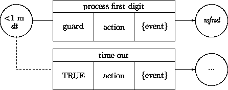
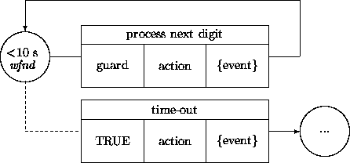
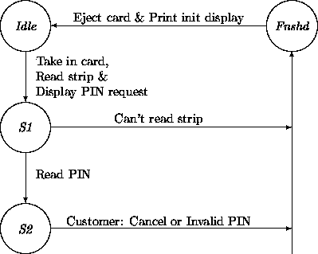
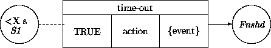

|
Chapter 11: Other Requirements |
The notions and notations developed thus far aim at capturing the intended functionality of the target system. We have used ``functionality'' in a narrow sense, excluding performance specifications, resource specifications, etc. For instance, we can describe the functionality of a subsystem only by stating that it performs a sort operation, while omitting a commitment regarding the resources, the number of compute servers, the performance, upper bounds on processing times, etc. In this chapter, we discuss the treatment of these so-called ``non-functional requirements''.
Resource constraints refer to the resources that are available to the executing target system. They do not refer to constraints that might apply to the development effort of that system.
There are many kinds of constraints, ranging from number and type of underlying compute servers, availability and capabilities of primary and secondary storage, accessibility of networks and their capabilities, and on up to the assumed nature of system infrastructure software.
All these constraints pass right through from the initial requirements phase to the design phase. For example, compute server constraints are explicitly addressed during the design phase. Other existing resource constraints must be satisfied somewhere and sometime during design and/or implementation.
However, it is possible that details brought out by the analysis yield the insight that there is a mismatch between resources that will be available to the target system and the demands of the system. Having too many available resources can be dealt with easily, but is unusual. Having not enough resources requires backtracking and resolution at the level of the requirements specifications.
Timing constraints are usually referred to as real-time constraints. A timing constraint can be formulated for phenomena at the system-context boundary. Here are some examples:
We may classify these constraints into two categories (cf., [2]):
If we look at the system and its context from a bird's-eye view, we see that performance and alertness timing constraints reduce to the same notion. When the system does not satisfy a performance requirement, the context will be alerted and will take appropriate actions. Dually, when the context does not perform from the system's perspective, a system's alertness mechanism must jump in.
System-context interaction speed is also subject to performance-based timing constraints. For example:
This constraint indicates that a recipient of the event stream has a lower bound on its ability to process the events, and thus that the generator must not be too fast. This illustrates that lower bounds on time windows sometimes have to be specified.
This expresses a performance constraint for both parties in an interaction.
Timing constraints are formulated for the demands of a particular system. This prescribes that notations for capturing these constraints should be adjoined to target system specific notions.
Use cases are obvious candidates for timing constraint annotations. For example, we can annotate a modified fragment of a use case from the previous chapter. The notation { x} denotes a state of affairs at time x.
Timing constraints described in use cases must be propagated into transition networks. However, to keep separate reusable generic classes and their transition networks from target system-specific classes and their transition networks, we must extend only the latter.
Let's have a closer look at a simple version of a telephone use case called PhoneSession from a switch control perspective. A corresponding transition network fragment is depicted in tabular notation:
| init state | action | result state |
| phone on hook | take phone off hook | phone off hook |
| phone off hook | provide dial tone | dial tone |
| dial tone | process digit | wait for next digit |
| wait for next digit | process digit | wait for next digit |
We may want to express the requirement that the transition provide dial tone should take at most 0.2 seconds. This is an example of a performance constraint. To be more precise, we put a bound on the time that can expire between leaving the phone off hook state and entering the dial tone state. This transition may imply interaction with third-party objects, which in turn may trigger other activities; nonetheless, the transition has to reach its goal state in 0.2 seconds. We could use the following notation (where poh stands for phone off hook, and dt for dial tone):

As an alternative notation, we may attach time labels to the arcs leaving and entering states, and then capture the same constraint using an expression that refers to the labels:

The second notation scales up when we need to put a bound on a sequence of transitions. Consider an initialization transition network that contains, for example, two variant sequences:

The guards of the process digit transitions depend on the occurrence of an external event, namely, a customer selecting a (next) digit. We want to provide for a time-out when the customer does not come up with a (next) digit. This is an example of an alertness constraint. A bound should be placed on waiting in the originating states of these transitions. For instance, a customer may be required to select the first digit within a minute, and each subsequent digit within 10 seconds ( dt stands again for dial tone, wfnd stands for wait for next digit):


Timing constraints within the states specify that associated guards (which depend on events that describe the arrival of a digit) should be satisfied within a certain time window. (These diagrams are oversimplified in that a last digit of a number is recognized through a time-out and that special short phone numbers are not recognized.)
Timing constraints within states are not necessarily associated with outbound transitions that depend on events. For example, we can have an object m that monitors an aspect of object p, where a guard in a transition in the network of m refers to the state of affairs of p. When the condition in the guard is not satisfied for too long a period, a time-out transition takes over. More specifically, consider a power plant that operates according to its own logic. To improve the safety of the plant, we can have a monitor object m that watches over sensor p readings. Normal functioning of the sensor p would entail that monitor m make a transition within a particular time frame. If not, a time-out transition springs into action.
For another example, we revisit a fragment of the transition network of an ATM given in Chapter 6:

Recall that the Idle -- S1 transition has been modeled in Chapter 10 to generate an event targeted at the ATMOutput constituent. The atm ensemble expects to obtain from its ATMInput constituent a PIN in its S1 -- S2 Read PIN transition as detailed in Chapter 6.
Suppose that the requirements document specifies that the customer must provide the PIN within a certain time span. This requirement can be accounted for by adding another time-out transition from S1 to Fnshd. This parallels the Can't read strip transition and depends on a time limit in S1:

We began by extending a sequential use case with timing annotations. These extensions exposed the incompleteness of the use case since no remedial actions have been specified when time constraints are violated. This is acceptable for the specification of user-system interaction, but needs remedial action when ``closing off'' the requirements. One may want to be specific about how badly the system behaves when a timing constraint is not met, taking into account total breakdown versus gradual degradation and everything in between.
Constraints may be annotated with some indication of the consequences of failure. For ease of use, these constraints and consequences may be organized into general categories. For example, Jacobson et al [4] provide several classifications of constraints in real-time systems. A distinction is made between hard deadlines and soft deadlines. Not meeting a hard deadline results in a disaster. An example is a control system for an aerodynamically unstable plane. Not meeting a soft deadline results in a degradation of service. A slowly responding ATM is an example. They also make the distinction between critical, noncritical, and nonessential services. Critical services have hard deadlines. Noncritical and nonessential services both have soft deadlines. They differ in that a ``nonessential process may miss its deadlines without any effect in the near future, but may have an effect in the long term if not executed (for example, maintenance and bookkeeping functions).''
Boehm [1] (see also Davis [2], chapter 5) mentions the following categories of other constraints: portability, reliability, efficiency, human engineering, testability, understandability, modifiability. These are refined into fifteen subcategories including self-containedness, robustness, integrity, and conciseness. We have nothing to add here at the level of analysis, but do address associated design criteria in Chapter 15.
Many non-functional requirements pass through analysis and are input to the design and/or the implementation phases.
Timing requirements may be classified into performance and alertness constraints. A performance constraint indicates that a certain operation by the system is to be completed in a certain time window. An alertness constraint indicates that a system should resume control when an external event does not occur within a certain time window.
Jacobson et al [4] further categorize time constraints in real-time systems, including for example, those between periodic and aperiodic processes.
Hoogeboom and Halang [3] argue that time should play a more explicit role in analysis and development. They propose that processors be equipped with radio receivers to replace the notion of local time by the ``awareness'' of global time. They also propose that tasks be scheduled in the same way as done in our society, using reservations for time slots, priorities, etc. It is hard to disagree with the advantages they list: